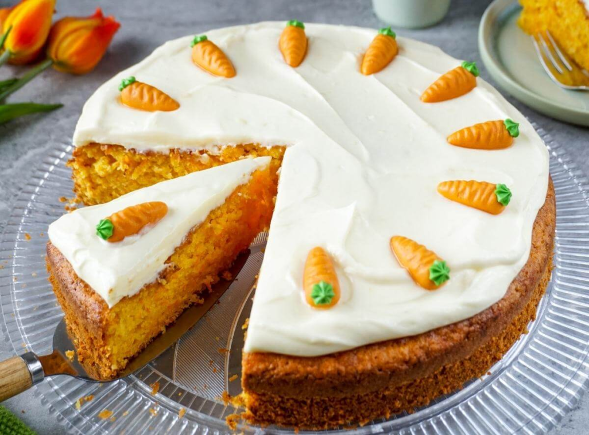

Karottenkuchen
- 300g Karotten (geraspelt)
- 200g Mehl
- 150g Zucker
- 3 Eier
- 120ml Rapsöl
- 1 Päckchen Backpulver
- 1 Prise Salz
- 1 TL Zimt
- 50g Walnüsse (gehackt)
- 1 Bio-Orange (Abrieb)
Zubereitung
- Den Ofen auf 180°C (Ober-/Unterhitze) vorheizen. Eine Kastenform (ca. 25cm) einfetten und mit Mehl bestäuben.
- Karotten schälen und fein raspeln. Walnüsse grob hacken.
- Eier und Zucker in einer Schüssel schaumig schlagen. Das Rapsöl unterrühren.
- Mehl, Backpulver, Salz und Zimt mischen und unter die Eimasse heben.
- Die geraspelten Karotten, gehackten Walnüsse und Orangenschalenabrieb unterheben.
- Den Teig in die vorbereitete Form füllen und im vorgeheizten Ofen ca. 45-50 Minuten backen.
- Mit einem Holzstäbchen testen, ob der Kuchen durch ist. Dann auskühlen lassen und aus der Form stürzen.
Rezept erstellt von
 Mohamed
Mohamed